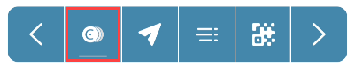

Tokens in the wallet#
You can add, inspect, and send tokens in the Concordium Wallet for Web and Concordium Wallet for Mobile for Android devices.
Concordium Wallet for Web
To access tokens and token transactions, click Tokens  . Tabs appear for tokens.
. Tabs appear for tokens.
Add tokens
Click Manage.
Enter a smart contract address on which to look for tokens. Click Look for tokens. If you get an error this means that the smart contract doesn’t exist, the smart contract doesn’t live up to the CIS-2 standard, or the smart contract doesn’t contain any tokens.
Select the token(s) you want to add. You can click on a token to see more information about it and then click X to return to the list to select tokens. You can also search by token ID at the top of the screen. Click Update tokens once you have made your selection(s).
If you have purchased tokens on a marketplace, it can suggest tokens to be added directly without going through the steps above. In this case the screen below appears when your wallet is connected and the service suggests the tokens to be added. Click Add selected to add the selected tokens to your wallet.
Note
You can add NFTs that are not owned by your account to your wallet. This does not mean that you have ownership of the NFT.
Once the tokens are added you can see them on the relevant tab.
An easy way to see how this works is to use the wCCD example dApp hosted by Concordium. Connect it to your Concordium Wallet for Web and convert some CCD to wrapped CCD. When you do this, you get the a smart contract index. You can then use this smart contract index to search for tokens on the contract and add them to your Concordium Wallet for Web.
Inspect tokens
Click the tab for the type of token that you want to inspect (Fungible or Collectibles). Then click on the token to see details for that token.
You can click Show raw metadata to see the raw metadata for the token. You can also click Don’t show token in wallet if you don’t want the token to appear in your wallet.
Send tokens
Click Send
 .
.Click the field for what to send.
In the amount field enter the amount of the token you want to send. The number of decimal places depends on the token. To find the number of decimal places, you can click on the token as described in Inspect tokens.
Add the receiver address.
Click Continue.
Review the transaction. When satisfied, click Send.
Click Finish.
Remove tokens
If you do not want the token to appear in your wallet you can remove it. This does not change the ownership of the token.
There are two ways to remove tokens.
Click on the tab for the token type and then select the token you want to remove. Click Don’t show token in wallet.
Click the Manage tab. Search for the token by the Contract index. Once the tokens on the contract are loaded, the tokens that are in your account have a checkmark next to them. Remove the check and click Update tokens.
Concordium Wallet for Mobile
To access tokens and token transactions, tap on an account then tap Tokens . Tabs appear for tokens.
Add tokens
Tap Manage.
Enter a smart contract address on which to look for tokens. Tap Look for tokens. If you get an error this means that the smart contract doesn’t exist, the smart contract doesn’t live up to the CIS-2 standard, or the smart contract doesn’t contain any tokens.
Select the token(s) you want to add. You can tap on a token to see more information about it and then tap X to return to the list to select tokens. You can also search by token ID at the top of the screen. Tap Add tokens once you have made your selection(s).
If you have purchased tokens on a marketplace, it can suggest tokens to be added directly without going through the steps above. In this case, the screen below appears when your wallet is connected and the service suggests the tokens to be added. Tap Add tokens to add the selected tokens to your wallet.
Note
You can add NFTs that are not owned by your account to your wallet. This does not mean that you have ownership of the NFT.
Once the tokens are added you can see them on the relevant tab.
An easy way to see how this works is to use the wCCD example dApp hosted by Concordium. Connect it to your Concordium Wallet for Mobile and convert some CCD to wrapped CCD. When you do this, you get the a smart contract index. You can then use this smart contract index to search for tokens on the contract and add them to your Concordium Wallet for Mobile.
Inspect tokens
Tap on the tab for the type of token that you want to inspect (Fungible or Collectibles). Then tap on the token to see details for that token.
You can tap Show raw metadata to see the raw metadata for the token. You can also tap Don’t show token in wallet if you don’t want the token to appear in your wallet.
Send tokens
To access send, either:
Tap the field for what to send.
In the amount field enter the amount of the token you want to send. The number of decimal places depends on the token. To find the number of decimal places, you can inspect the token as described in Inspect tokens.
Add the receiver address.
Tap Send funds.
Review the transaction. When satisfied, tap Send funds.
Tap Finish.
Remove tokens
If you do not want the token to appear in your wallet you can remove it. This does not change the ownership of the token.
There are two ways to remove tokens.
Tap on the tab for the token type and then tap on the token you want to remove. Tap Don’t show token in wallet.
Tap the Manage tab. Search for the token by the Contract index. Once the tokens on the contract are shown the tokens that are in your account have a checkmark next to them. Remove the check and tap Update tokens.
Warning
If you had previously configured your wallet to be able to view selected tokens and you recover your wallet, the tokens will not be recovered. You must add the tokens again to view them in your wallet.
 Copyright 2021 - 2023, Concordium Software ApS
Copyright 2021 - 2023, Concordium Software ApS
{kind=link}
{kind=link}
{kind=link}
{kind=link}
{kind=link}
{kind=link}
{kind=link}
{kind=link}
{kind=link}
{kind=link}
{kind=link}
{kind=link}